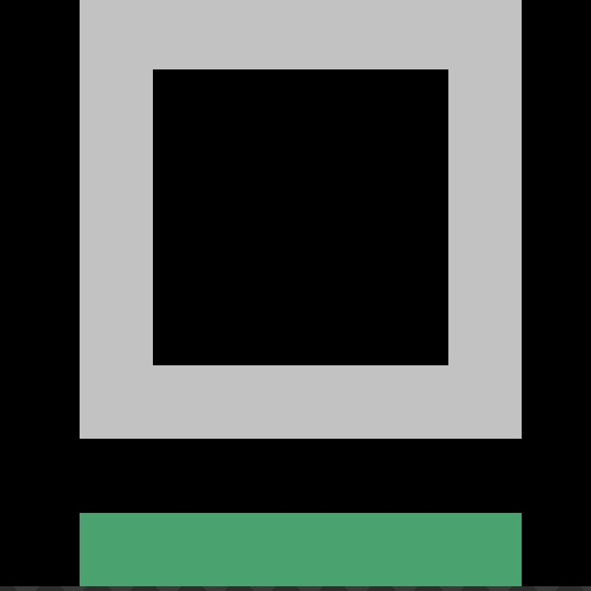

面向开发者的现代化代码编写平台，支持实时协同编辑与自动化工作流管理，助力团队高效交付。
让编码更高效、协作更流畅
基于 OT 算法的多人实时编辑，支持光标同步、冲突合并，让团队协作无缝衔接。
内置 CI/CD 集成、代码格式化、Lint 自动修复，从提交到部署全链路自动化。
基于语言服务器协议（LSP）的代码补全、跳转定义、引用查找，支持多语言。
集成化的终端模拟器，支持多标签、分割视图，无需离开编辑器即可执行命令。
CodeApp 采用的技术生态